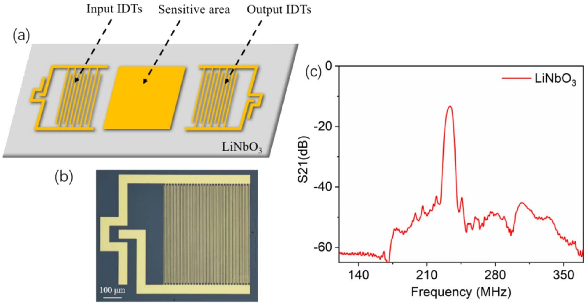
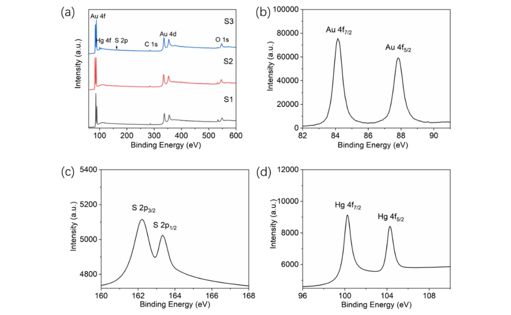
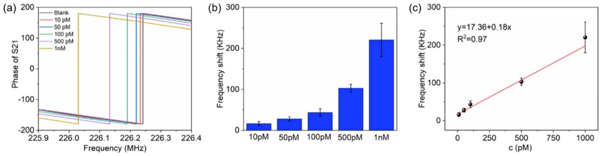
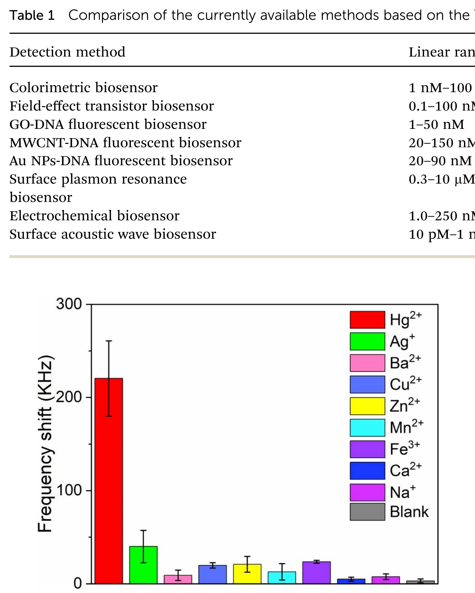

分子识别与声表面波：高灵敏汞离子检测
研究把 DNA 的选择性分子识别与 LiNbO₃ 声表面波器件结合：含胸腺嘧啶的探针经 Au–S 键固定在金敏感区，Hg²⁺ 诱导形成稳定的 T–Hg²⁺–T 配位结构，界面质量与黏弹性质变化再被转换成可测的谐振频率偏移。
10 pM–1 nM线性检测范围
6.3 pMHg²⁺ 检测限
8 种对比干扰离子
LiNbO₃ 声表面波芯片结构与频率响应
器件在压电 LiNbO₃ 基底上布置输入和输出叉指换能器，中间保留金敏感区。输入换能器把射频电信号转换为沿表面传播的声波，输出端再将其转回电信号。敏感区发生质量负载或黏弹性变化时，传播速度和相位随之改变，最终表现为 S 参数谐振峰的频率移动。

Au–S 固定探针，T–Hg²⁺–T 完成特异配位
带巯基的 DNA 探针通过 Au–S 键自组装到金表面。样品中存在 Hg²⁺ 时，两个胸腺嘧啶碱基与 Hg²⁺ 形成 T–Hg²⁺–T 配位结构，使 DNA 构象和界面负载发生变化。该过程不需要荧光标记或额外放大试剂，分子结合事件由声表面波传播直接读出。

用频率偏移建立 pM 级浓度标定
随着 Hg²⁺ 浓度增加，敏感区结合量上升，器件频率响应产生可重复的浓度依赖变化。论文在 10 pM–1 nM 范围内获得线性关系，检测限低至 6.3 pM，覆盖饮用水和工业废水中超低浓度汞离子监测所关注的区间。

把特异配位与便携式声学读出结合
Ag⁺、Ba²⁺、Cu²⁺、Zn²⁺、Mn²⁺、Fe³⁺、Ca²⁺ 和 Na⁺ 等干扰离子不会像 Hg²⁺ 那样稳定桥连两个胸腺嘧啶，因此产生的频率变化明显较小。选择性来自识别层的分子化学，灵敏读出来自 SAW 芯片；两者分工明确，为后续小型化流体接口、现场水样检测和便携式仪器集成提供了基础。

论文来源
Highly sensitive surface acoustic wave biosensor for the detection of Hg²⁺ based on the thymine-Hg²⁺-thymine structure
Huimin Sun, Chunzhen Yang, Hong Wang
Analytical Methods 15 (2023), 4728–4735
DOI：10.1039/d3ay01188g
AMBIC Laboratory
SUN YAT-SEN UNIVERSITY